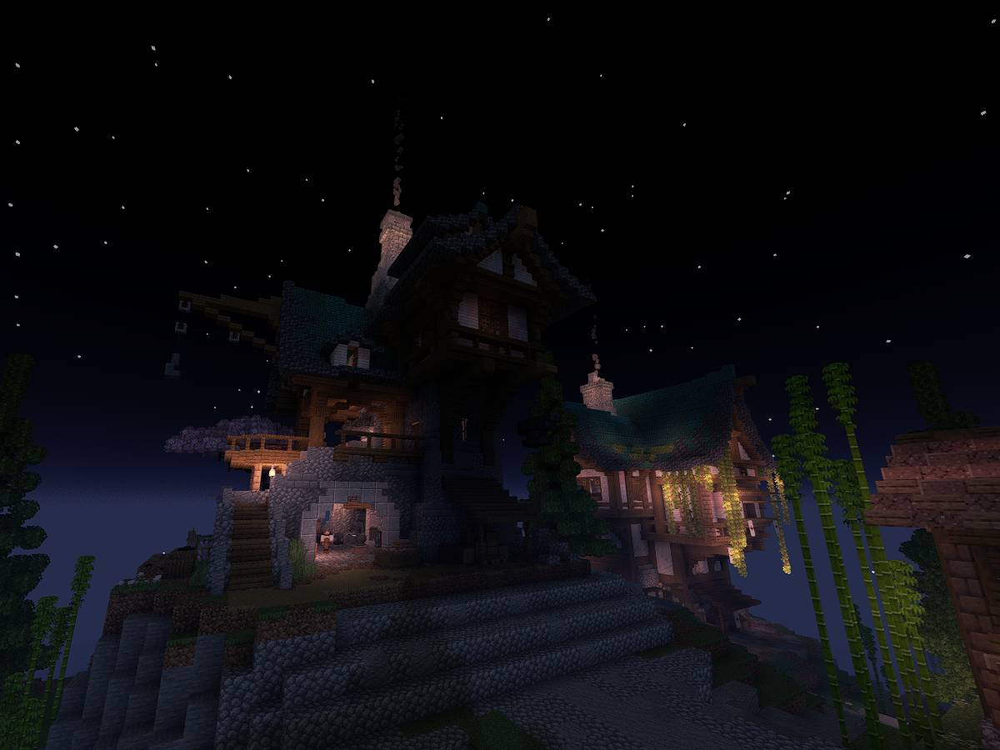
Спавн
Безопасная гавань с мастерами, торговцами и гидом Эйденом. Здесь не ломают и не строят — только торгуют, учатся и собираются в путь.
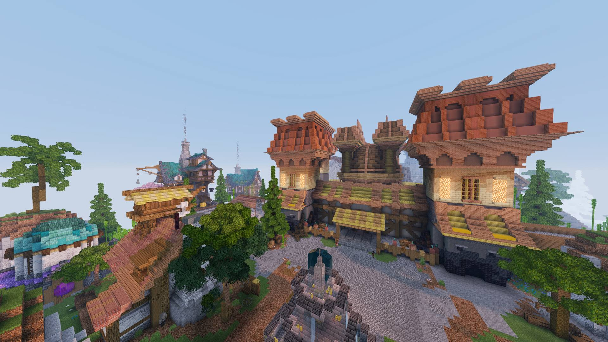
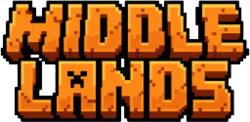
Тёмное средневековое RPG-выживание: живой мир, ремёсла, классы и королевства. Сезон II уже идёт.
Minecraft Java 1.21.11. Из России — middlelandsru.gomc.fun
MiddleLands — сервер, где Minecraft становится суровым средневековым RPG. Мир живёт сам: меняются времена года, зимой замерзают руки, на болотах цепляется лихорадка, а ночью из-под земли поднимаются скелеты с мечами, луками и магией.
Выживать здесь помогают ремёсла. Броню куют в кузне из десятков металлов, еду готовят на настоящей кухне, лекарства варят у алхимического стола. Каждый находит своё дело: кто-то держит ферму и торгует на аукционе, кто-то водит отряды в подземелья, кто-то строит королевство и защищает его от соседей.

Безопасная гавань с мастерами, торговцами и гидом Эйденом. Здесь не ломают и не строят — только торгуют, учатся и собираются в путь.
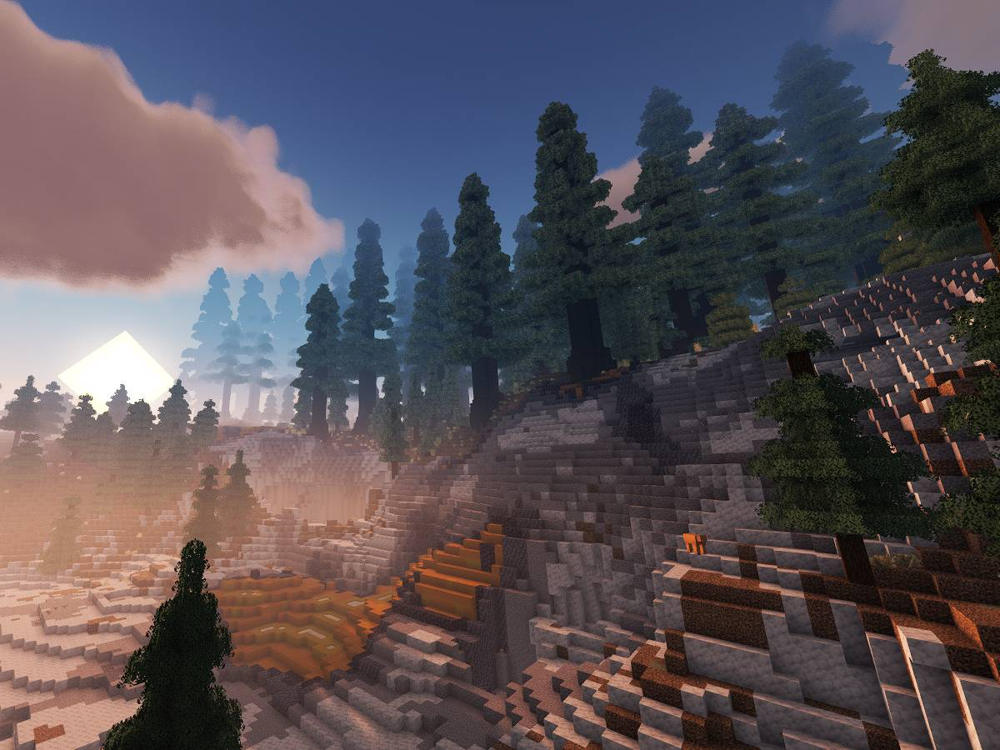
Основной мир для жизни: огромные горы, каньоны, сотни биомов, руины, подземелья и таверны. Сюда отвозит паромщик Бьорн — первый раз бесплатно.
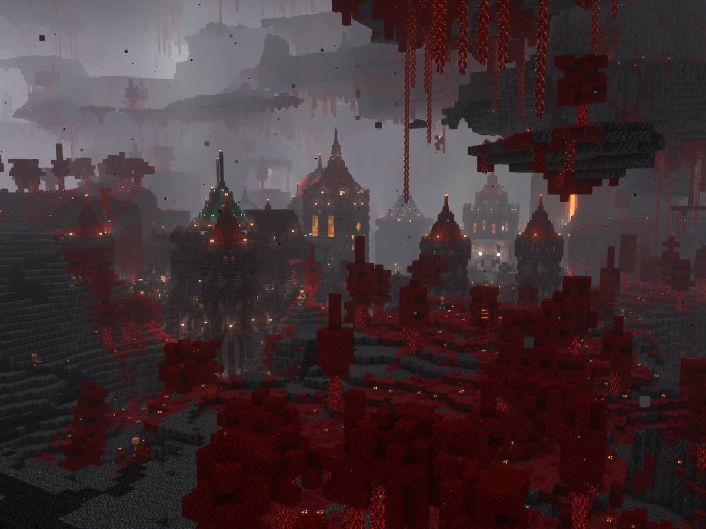
Переработанный Незер: новые биомы, крепости и опасные обитатели. Здесь же ловят рыбу прямо в лаве.
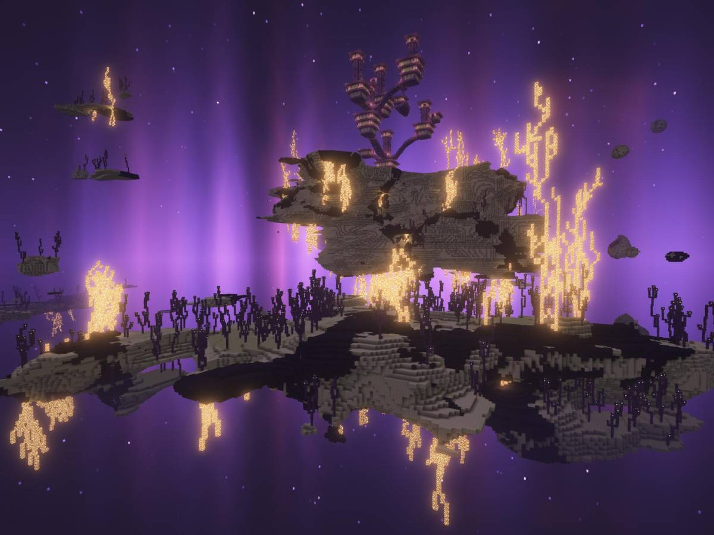
Парящие острова в пустоте, новые биомы и самая редкая добыча для тех, кто дошёл до конца.
Всё, чего нет в обычном Minecraft. Нажми на раздел, чтобы открыть подробный гайд.

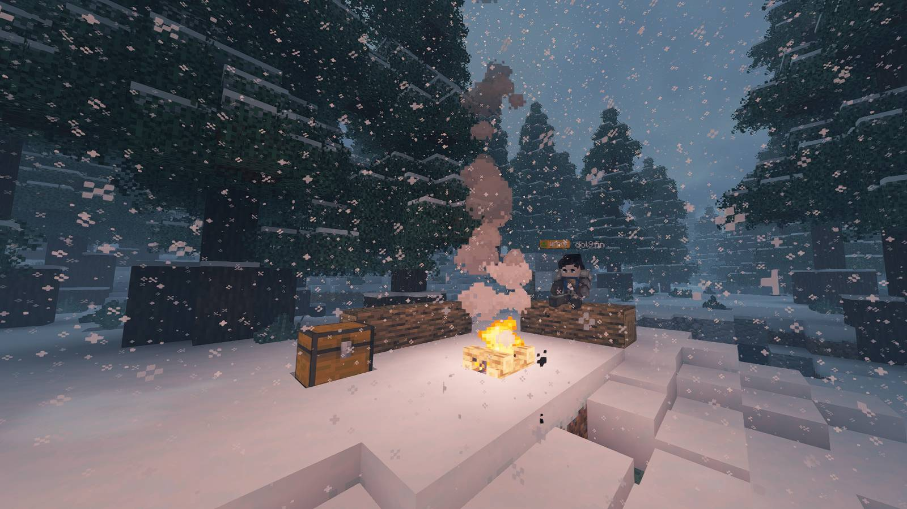


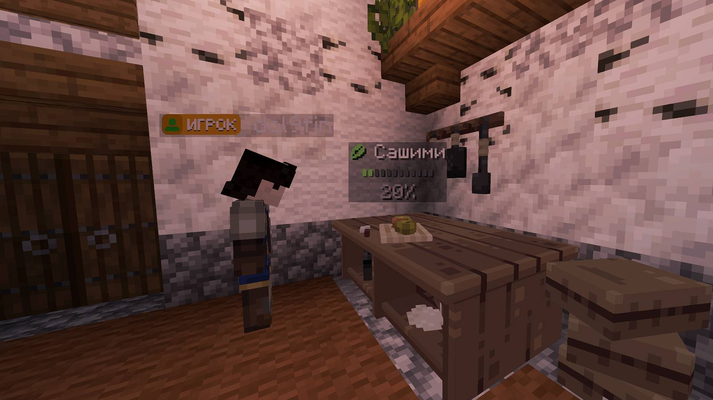

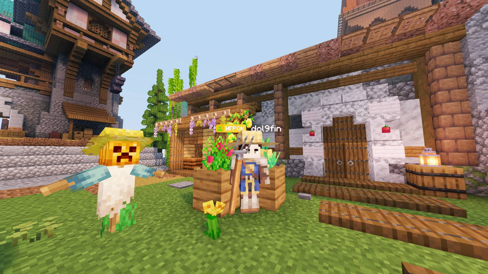
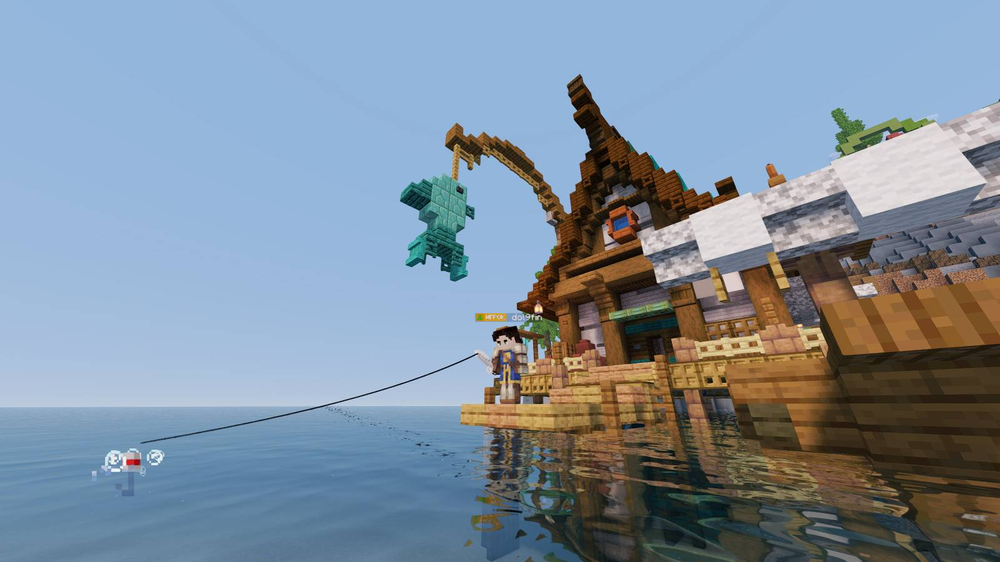


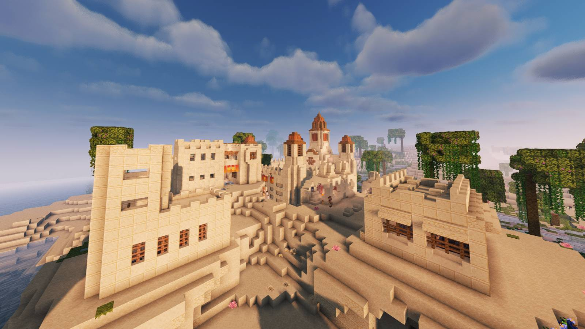


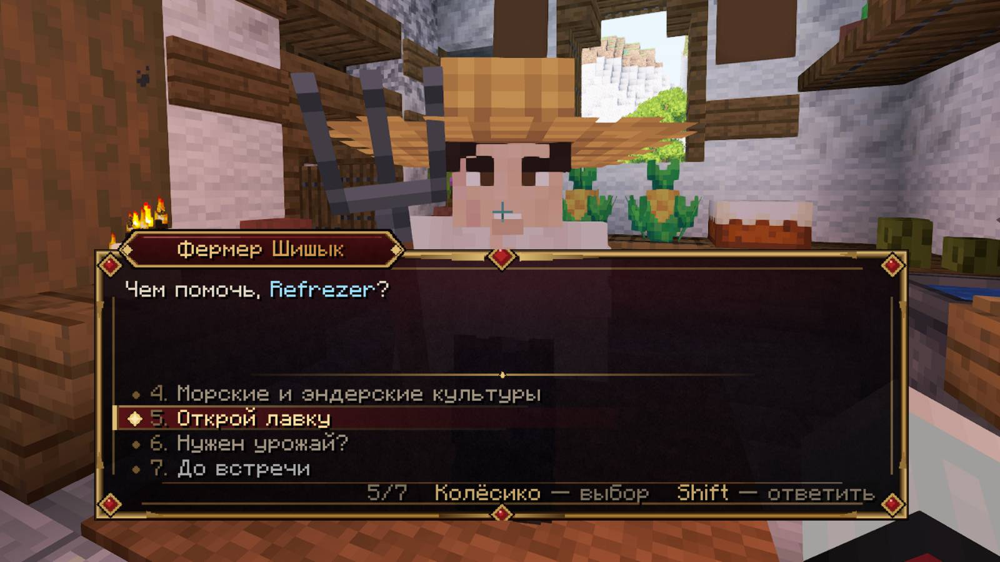
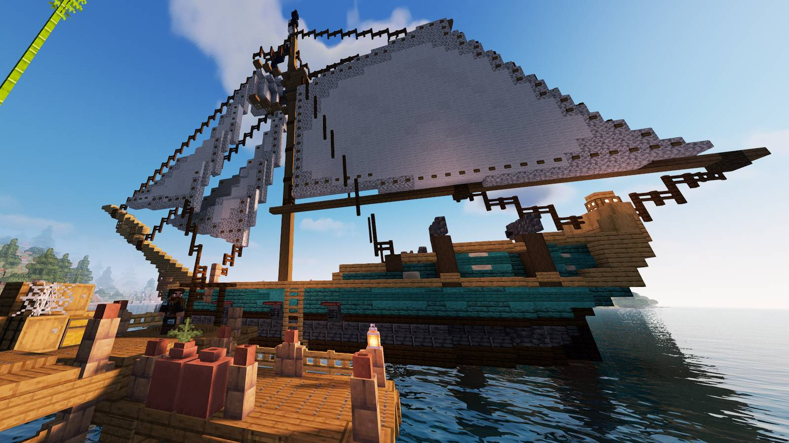
Публичные ивенты с волнами врагов, заданиями и наградами для всех участников. Анонсы — в Telegram и Discord.
Как устроены событияДевять привилегий с собственными сетами брони, умениями и командами. Каждую неделю — кейс со своим сетом. При апгрейде доплачиваешь только разницу.
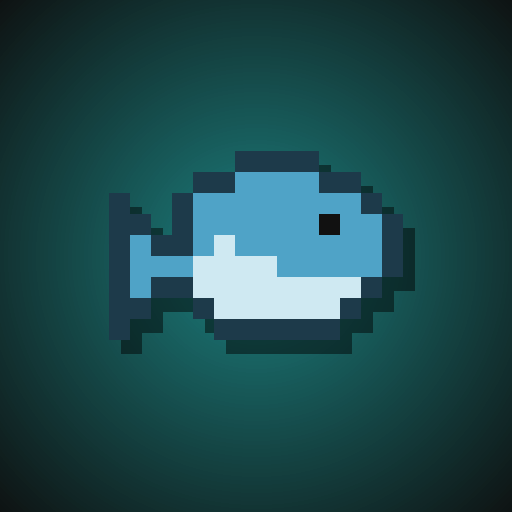
CРыбакремесло и рыбалкаот 149 ₽ навсегда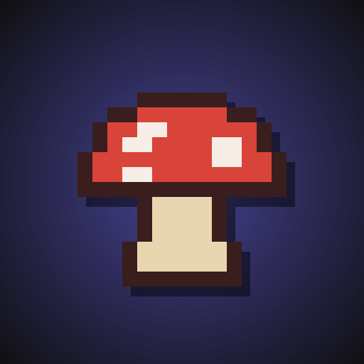
BСобирательмаг природы, PvEот 299 ₽ навсегда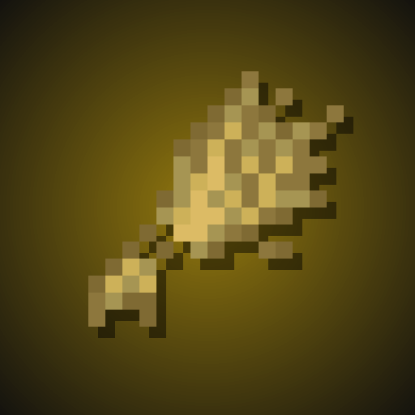
B+Фермерурожай ×2, засев 3×3от 379 ₽ навсегда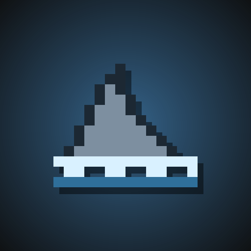
AАкулавоин воды и дождяот 499 ₽ навсегда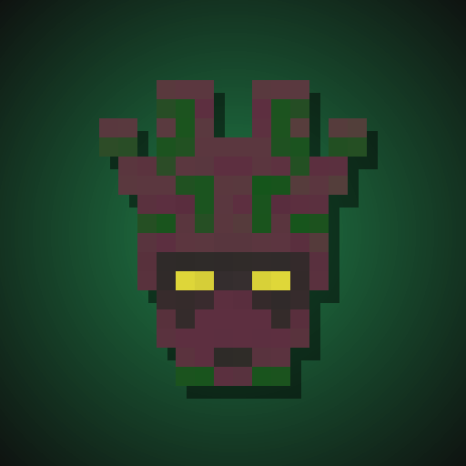
AШаман Тикипризыватель духовот 599 ₽ навсегда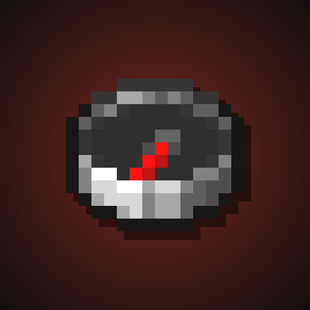
SЧёрный рынокскрытность, удар из тениот 779 ₽ навсегда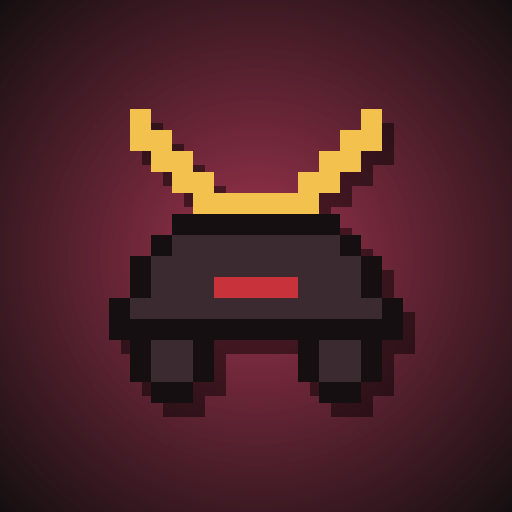
SСамураймастер ближнего бояот 799 ₽ навсегда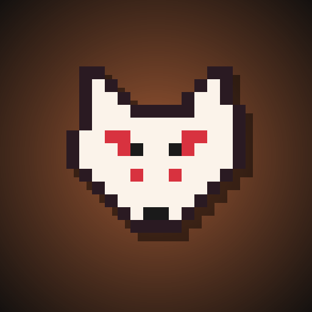
SКицунэPvP-маг, двойной прыжокот 899 ₽ навсегда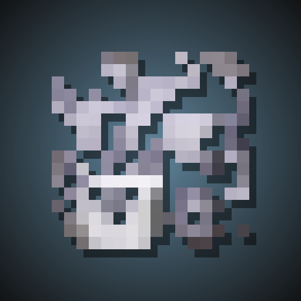
S+Полярникснайпер в снегахот 1000 ₽ навсегдаВ Minecraft Java 1.21.11 открой «Сетевая игра» → «Добавить» и впиши адрес. Из России стабильнее заходить через middlelandsru.gomc.fun.
При первом входе введи /register пароль пароль, дальше — /login пароль. Прими ресурспак: без него не будет видно предметов и мобов сервера.
Гид Эйден на спавне расскажет о механиках и выдаст стартовый набор. Потом иди к паромщику Бьорну — он бесплатно отвезёт в Дикие земли.